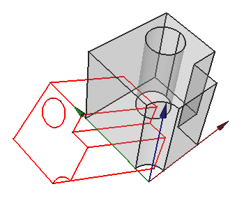
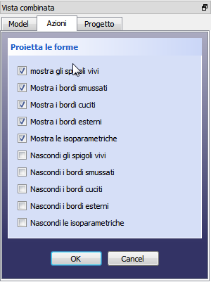

Drawing ProjectShape Drawing ProjectShape
|
| Расположение в меню
|
| Чертёж → Проекция фигуры
|
| Верстаки
|
| Drawing, Complete
|
| Быстрые клавиши
|
|
|
| См. также
|
|
|
|
Description
This tool creates a projection of the selected object (Source) in the 3D view.

Usage
| 
|
- Select an object in the 3D view or in the project tree
- from the Drawing menu, click Project shape
- set the desired options in the Task Dialog
- click OK
A projection object (objectname_proj) will be added to the project. For subsequent projections of the same Source object, the projection object will be named objectname_projXXX, where XXX is a three digit number.
|
Edit an existing projection
|
|
The projection parameters can be edited in the Property editor.
Base
- DATALabel :
- DATAPlacement :
Projection
- DATADirection : defines the direction of the projection. This is the normal vector of the projection plane. For example, to project the object onto the xy plane, use (0,0,1). To reverse the projection, use negative values.
- DATAHCompound :
- DATAIso Line HCompound :
- DATAIso Line VCompound :
- DATAOut Line HCompound :
- DATAOut Line VCompound :
- DATARg1 Line HCompound :
- DATARg1 Line VCompound :
- DATARg NLine HCompound :
- DATARg NLine VCompound :
- DATASource : the object being projected
- DATAVCompound :
|
{kind=link}
{kind=link}
{kind=link}